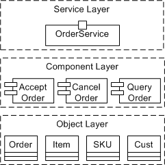
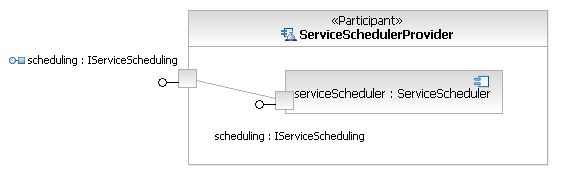
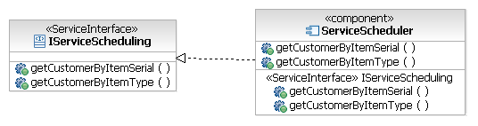

| Guideline: Service Component Patterns |
 |
|
| Related Elements |
|---|
IntroductionIn decomposing a service component into its constituent functional and technical components, we have delegated the functionality provided by the service component to fulfill the subsystem's functional responsibilities. Functional components supply the business functionality required, while technical components provide generic functionality such as authentication, error handling, auditing, logging, etc which are operational and non-functional oriented. A service model is a design-time artifact. As such, it does not deal directly with the implementation of services. However, the actual implementation of a service or set of services is strictly performed by a service component's realization of a service specification. The service specification provides the implementation contract; the technology or techniques used to implement the service are irrelevant as long as the contract is fulfilled. In Concept: Service Oriented Architecture, we introduced the following picture demonstrating the relationship between the services we identify and the components and objects that provide the implementation of these services. Figure 1. Conceptual abstraction hierarchy among service layer, component layer, and object layer  In this way, we see that a traditional component design model can be used to capture the design of the component and object layers, with implementation models and artifacts capturing details of the object layer and associated implementation and deployment artifacts. Important aspects of the relationship between the service model and the component design model are that the set of service specifications represent contracts that must be fulfilled, operations identified on specifications must be implemented as-is, and that consumers of services are using this same model to understand the interface and behavior of the services they expect to use. As such, there is a direct and in general a one-to-one relationship between the service specification and some implementation artifact that acts as the initial implementation entry point for the service. For example, consider the following diagram of a service provider showing its delegation of interface operation implementation to an internal component. Figure 2. Delegation of a service provider's interface operation implementation to an internal component  The service component needs to be directly traceable to the service model. The easiest way to accomplish this is to make use of the fact that the service specification element is a UML Interface that can be realized by the service component, thus ensuring its conformance to the structural specification. In this way we would get the following result: Figure 3. Realization of the service interface by a service component  It is now the responsibility of the component implementer to define a set of components and classes that provide the behavior of the resulting component. Kinds of Service ComponentsFunctional ComponentsThe composition of these functional components into a larger-grained service component is not merely structural; it also involves the definition of flow, that is, the collaboration of the functional components to provide functionality to support the business processes. This step includes traditional OOAD activities. We have a focused and well-partitioned scope to direct the object design. In traditional object-oriented design, we tend to create larger, more dependent object graphs, whereas if subsystem analysis follows the identification of functional areas within the business, we have a very clearly defined scope to focus on and direct our design energies towards. These results in a set of more loosely coupled object models (class diagrams and sequence diagrams triggered by system use cases). Technical componentsThe composition of technical components into larger-grained service components occurs in the same fashion as functional components. Technical components such as authentication, logging and reporting can be used across business processes. These common components are needed to form the infrastructure to support the functional components. One of the key variations across business processes is due to business rules as shown below in Example: Enterprise Component Pattern. These variations are typically captured during Variation-Oriented Design. Service Component PatternsHaving said that the service component simply realizes the service specification does not provide the implementer with much assistance in going from a coarse-grained service definition to a set of fine-grained implementation classes and artifacts required to provide the behavior of the service. In this regard, it is common to rely on patterns that provide structure to the resulting service component, either as a starting framework or specific patterns to address particular policy requirements. Five sample service component patterns are described in:
The choice of pattern is driven by non-functional requirements, architectural and design constraints, and other organizational factors. |
| Concepts | |
|---|---|
| Examples |
Licensed Materials - Property of IBM |